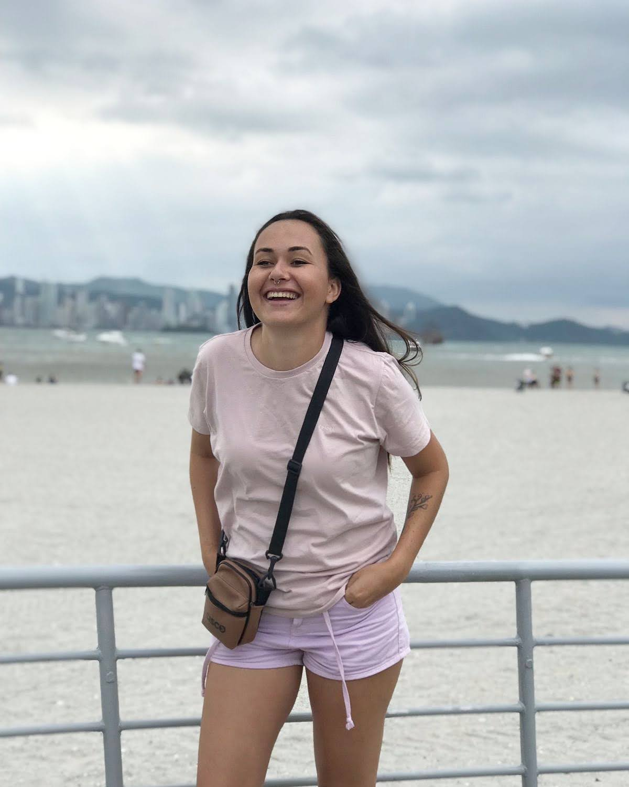
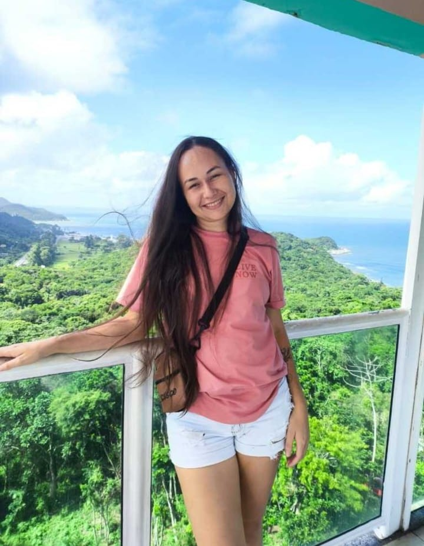
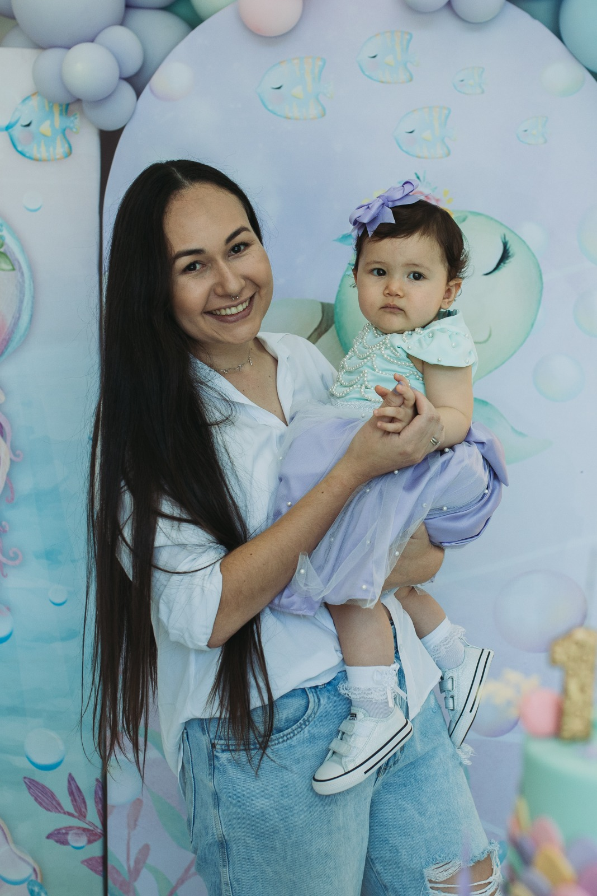
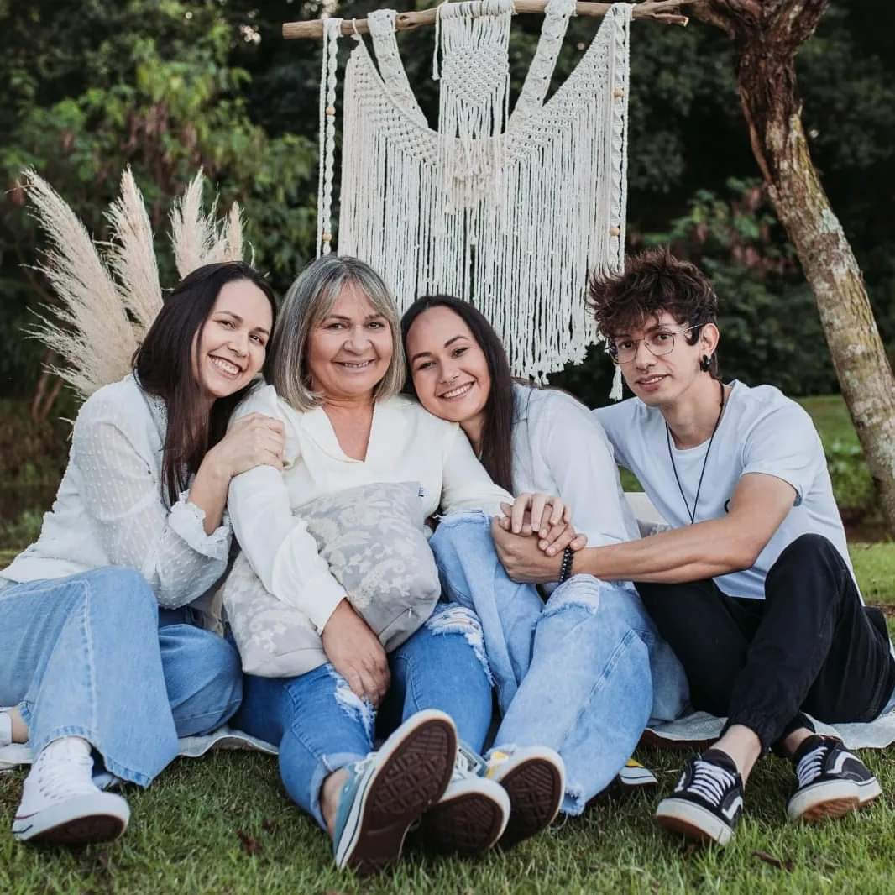
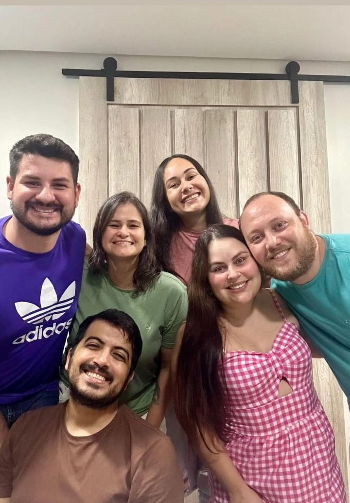

Sobre Mim


Sou Lidiane, 31 anos, nasci em Toledo - PR.
Amo gatos, tenho 3 filhas pets: Stefany, Celeste e Blue.
Estudante de Sistemas.
Hobby: assistir séries e fazer artesanato.
Gosto muito de viajar e se for para praia melhor ainda.
Cidade de Origem: Toledo - PR
Metas
- Concluir a faculdade de TSI.
- Aprimorar conhecimentos em desenvolvimento.
- Ser implantadora de sistemas em empresas ou processos.
- Desenvolver habilidade de comunicação limpa.
- Conhecer outros países.
- Adquirir hábito da leitura.
- Criar hábitos saudáveis de alimentação.
- Praticar exercícios físicos regularmente.
Família
Minha família é minha base. Meus pais sempre nos incentivaram a estudar e trabalhar para conquistar objetivos. Tenho dois irmãos e sou a filha do meio.


Amigos
Tenho dois amigos que moram longe: Dani (Itália) e Samuel (São Paulo). Também recebi de presente os melhores amigos ao meu lado, Lilian e Carraro, compadres essenciais em nossas vidas.
Eduardo e Jorge são mais que amigos, são minha família. Posso contar com eles em todas as horas.
